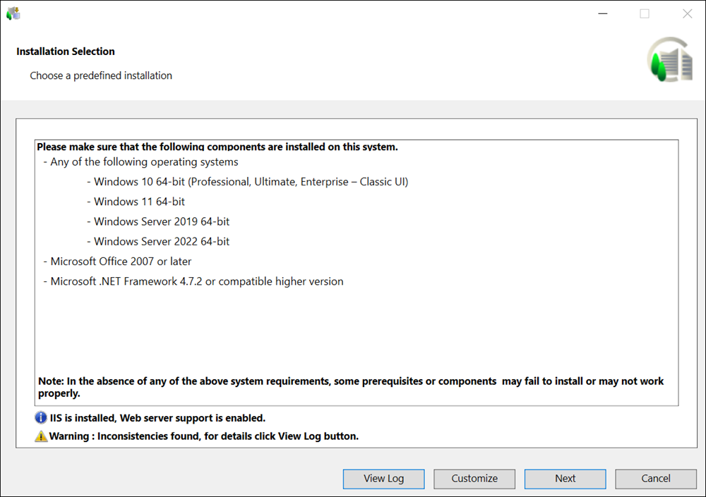
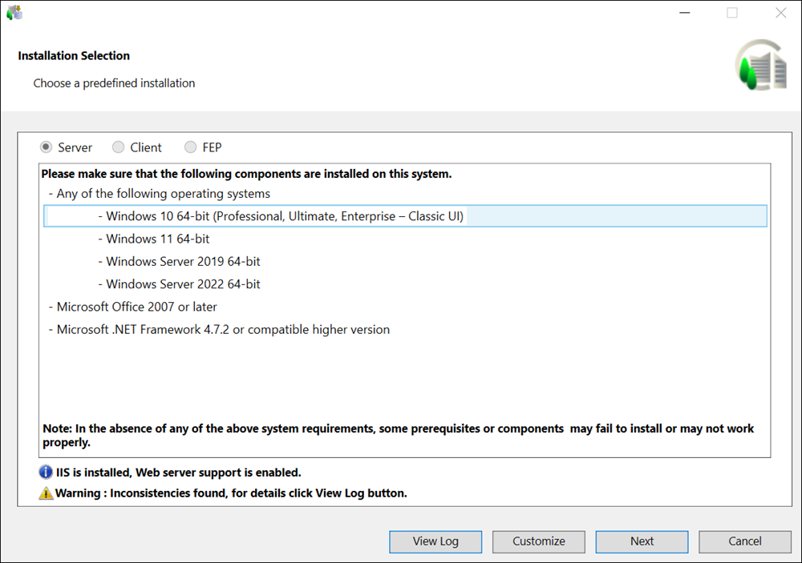

Verify the Installation Selection
- In the Installation Selection dialog box, that displays, when there is a single GMS Platform.xml file available for a setup type, verify the listed required software that is not included in the installation program. Ensure that the computer has all listed software installed before clicking Next; otherwise, a message displays.
- In the Installation Selection dialog box, that displays, when there is a single GMS Platform.xml file for multiple setup types (Server, Client FEP), select the required setup type by changing the default (Server). Also, verify the listed required software that is not included in the installation program. Ensure that the computer has all listed software installed before clicking Next; otherwise, a message displays.
- In the Installation Selection dialog box, that displays, when multiple GMS Platform.xml files are present for multiple setup types, select the required instruction file for the default setup type (Server) or select another setup type and the required instructions file.
- For Client/FEP installation, select the modified GMS Platform.xml file, available under path ...\InstallFiles\Instructions, containing setup type as Client or FEP and the extensions along with the post-installation steps that can be installed on the Setup type - Client/FEP.
NOTE: Any mismatch between the GMS Platform.xml file and the software distribution is listed in the Warnings section. (See Consistency Check Scenarios).
During fresh installation, installation of hotfixes or quality updates, for any errors or warnings, for example, regarding platform (GMS folder) or EM folder, prerequisites, extensions, or post-installation steps, digital signature validation, a warning message displays in the Installation Selection dialog box and you can view details by clicking View Log. For more information see, Consistency Check Scenarios. - You can click the selected GMS Platform.xml file to deselect it.
- If all the files in the Instructions folder are corrupted, then they are not available for selection and the Next button is disabled and you cannot work with semi-automatic installation. The Customize button is enabled and displayed only when one of the files available in the Instructions folder contains the value for the tag Customize = True.
- (Optional and required only when you want to install and configure IIS on the selected setup type) Verify that the checkbox for IIS configuration is selected by default. Alternatively, deselect it to skip IIS installation.
The checkbox displays only when no IIS component is installed. Thus, the configuration of IIS settings are automated during installation only when no IIS settings are configured already. However, if any IIS component is already installed, a warning message displays informing you to manually configure IIS. (see manually install and configure IIS on the Server/Client/FEP computer). Installer does not automatically identify and complete the missing IIS components during installation.
If all required IIS components are already correctly installed and configured, an info message displays and you can proceed with installation.
NOTE: In case when no IIS components are configured but ARR is installed and enabled, installer displays a warning message and once the installation along with IIS configuration is completed you need to uninstall existing ARR and re-install ARR and enable it. For more information, see Install Application Request Routing (ARR) in Manually Install and Configure IIS on Different OS Types. - Click Next to proceed with the semi-automatic installation.
If you clicked Customize, you proceed with the custom installation. 


- By default, the installation language of the OS is used as the language of the installation program, if the language pack is available. However, if the language pack is invalid or not found on the distribution media, then the Welcome to the Desigo CC Install Wizard dialog box displays, with en-US language. It also lists all the languages whose language packs are valid and available at the path
...\InstallFiles\Languages. - Accept the default en-US unless you want change it. You can also add more installation languages using Add Installation Language.
- Click Next.
NOTE: If the GMS Platform.xml file includes all the required extensions, including their external paths, if any and there is no inconsistency in the configured extensions, then the Feature Selection dialog box does not display. However, if there is any inconsistency, for example, the configured extension is not available in the software distribution or the path for the extension you want to add from location other than distribution media is not configured, then the Feature Selection dialog box displays. You can select a new extension or add the missing extension from external location using the Feature Selection dialog box. 
An asterisk (*) displays next to the extension that are IEC62443-4-2 certified in the Feature Selection dialog box.
If all mandatory and non-mandatory extensions are IEC certified, a message "Platform and EMs (*) adhere to the IEC 62443-4-2 standard" displays in the Feature Selection dialog box.
If any of the mandatory extension is not IEC certified, a message “EMs (*) adhere to the IEC 62443-4-2 standard” displays in the Feature Selection dialog box.
If any of the non-mandatory extension is not IEC certified, a message "Platform adheres to the IEC 62443-4-2 standard" displays in the Feature Selection dialog box.
- Select/deselect the extension as required.
- Click Add EM to add one or more extensions from the location other than the distribution media at the path ....\EM\[EM Name]. Ensure that the parent extension of the newly selected extension is also selected. Otherwise, the newly selected extension (child) cannot be added and a warning displays.
The Installer adds extension to appropriate extension suite. It also detects the Language packs, if any, for the external extension and adds it. (See Consistency Check Scenarios). - Click Next.
NOTE: Any inconsistency in the GMS Platform.xml file with respect to Language Pack Name (for example, the LanguagePackName entry is missing or the language name is invalid) or with the Language Pack (for example, Language Pack not present in the software distribution), results in displaying the Language Packs dialog box, where all the listed language packs are selected by default. You can also add more language packs using Add Language Pack. - Click Next.
NOTE: All required language packs must be installed before you create a customer project. (See Language Packs and the List of Supported Languages)
- Since the GMS Platform.xml file includes the required post-installation steps for GMS/extension, the PostInstallation Steps Selection dialog box does not display. However, if there is any inconsistency, for example, the configured post-installation step is not available in the [GMS/EM Name]PostInstallationConfig.xml, then the PostInstallation Steps Selection dialog box displays, assisting you in selecting the GMS/EM post-installation steps. For more information see, Consistency Check Scenarios.
NOTE: Only those post-installation steps are displayed in PostInstallation Steps Selection dialog box for which the value for the tagExecute = AskUseris configured in the [GMS/EM Name]PostInstallationConfig.xml file.
IfExecute = Alwaysis configured in the [GMS/EM Name]PostInstallationConfig.xml file, that post-installation step is not listed in the PostInstallation Steps Selection dialog box. In this case, the post-installation steps are directly listed in pending list of the Ready to Install the Program dialog box.
During installation of the Platform or extension, the Post Installation folder is copied to ..\GMSMainProject and the post installation steps are executed from ..\GMSMainProject\PostInstallation\GMS or ..\GMSMainProject\PostInstallation\EM\[EM Name].